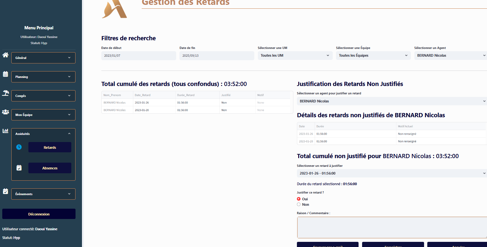
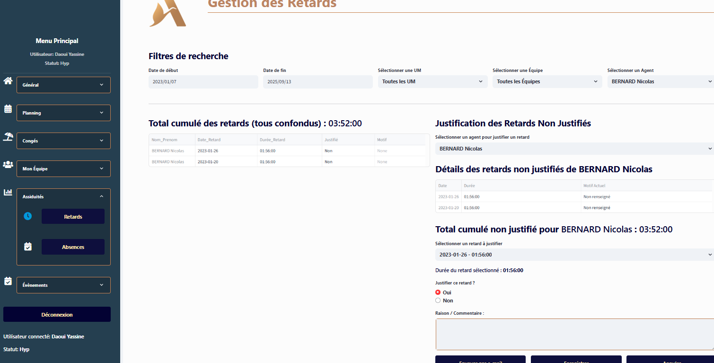
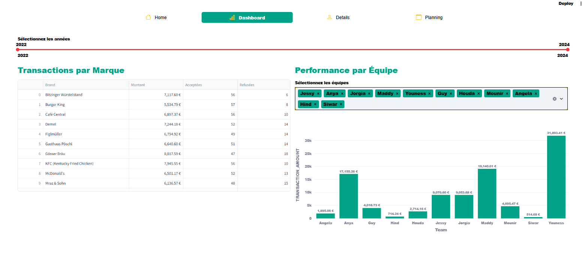
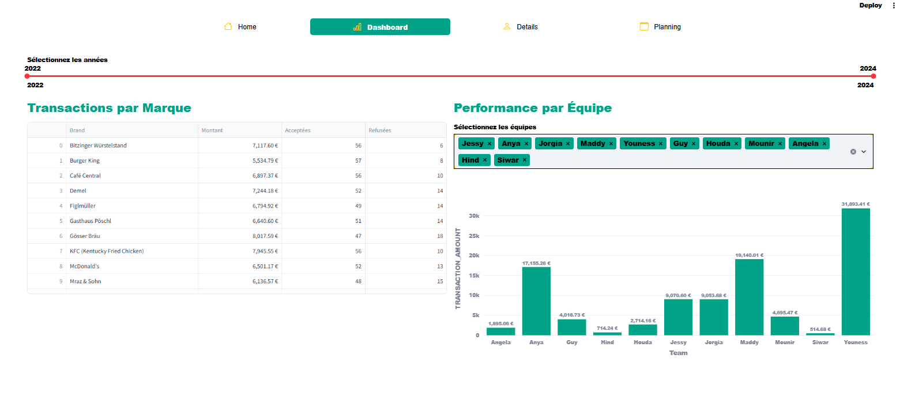
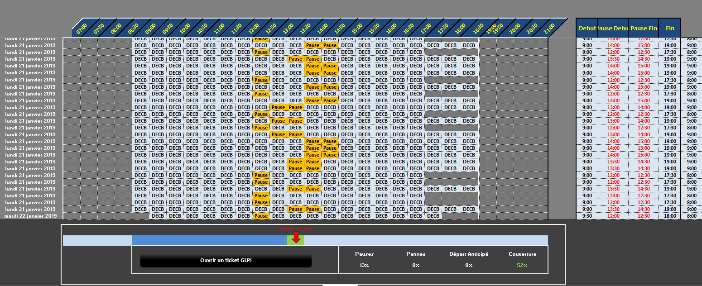
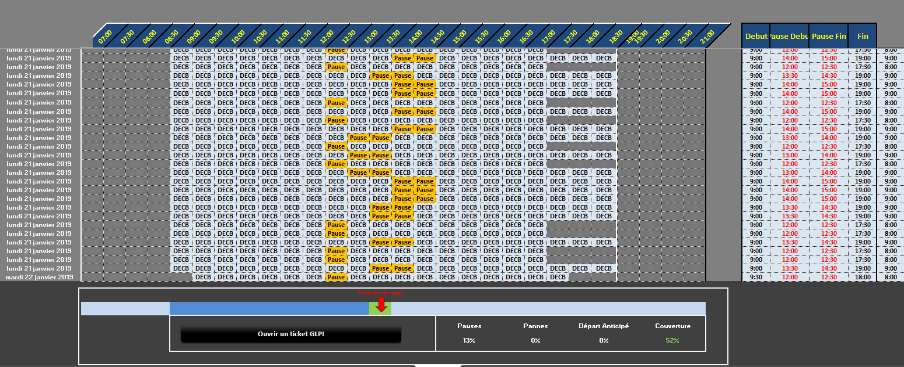

Spécialiste en analyse de données, développement et automatisation de processus
Voir mes projets
Passionné par la data et l'optimisation des processus, je conçois des solutions sur mesure pour automatiser et simplifier les flux de travail, avec une expertise en Excel, Power BI, SQL, Python et outils d'automatisation.
Formé initialement en analyse et programmation, puis en gestion managériale informatisée, et titulaire d'un bachelor en science et technologie de l'informatique, j'allie compétences techniques et vision stratégique. Avec plus de 15 ans d'expérience dans le traitement, l'analyse et la livraison de données, j'ai intervenu dans divers secteurs : télécommunications (optimisation des flux réseaux), assurance et banques (reporting financier, détection de fraudes), hôtellerie et énergie (solutions BI pour la gestion des ressources), santé (sécurisation des données médicales), et consulting (audit, migration de données on-premise vers le cloud), comme Azure, AWS et Google Cloud.
Télécharger mon CVExtraction, traitement et visualisation avancée de données
Solutions complètes de BI pour votre entreprise
Stratégie data sur mesure pour votre organisation
Transition sécurisée entre systèmes
Optimisation des processus métiers par l'automatisation
Montée en compétences de vos équipes data


Gestion des coachings et tableau de bord de vente optimisé avec Python Streamlit
Dashbords pour la vente et la récolte d'un fournisseur d'energie leader sur le marché mondial, ce projet est une migration de Excel Access vers le Power Bi et SQL.

 



Automatisation de la récupération des demandes de congés, de la planification et du suivi managérial avec Python.


Automatisation du processus de récupération des écoutes et évaluation des performances réseau pour améliorer la qualité de service et optimiser la rentabilité.
 



Optimisation du suivi des livraisons et amélioration des indicateurs de rentabilité, d'administration financière et RH, en capitalisant sur les ressources existantes.


 

Automatisation de tâche quotidienne de planification de ressources à l'aide du VB Script et Python.
Je suis disponible pour discuter de vos projets data, répondre à vos questions ou explorer de nouvelles opportunités professionnelles.